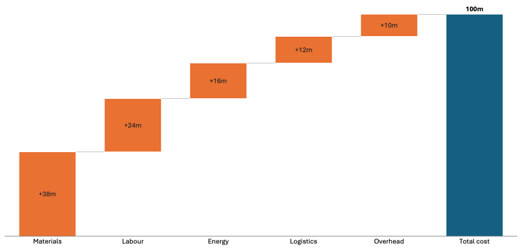
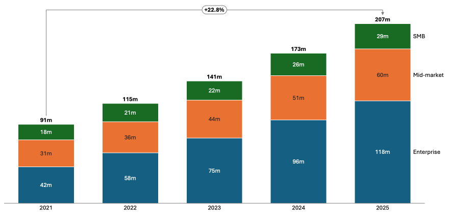
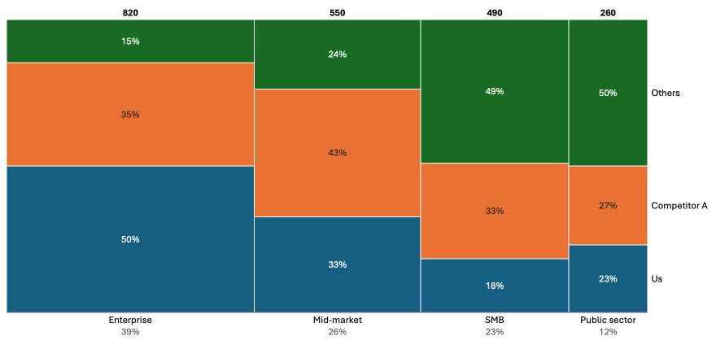
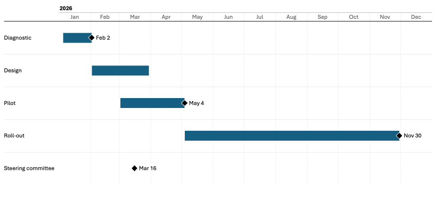
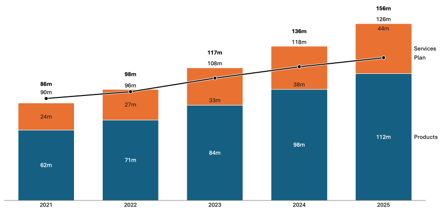
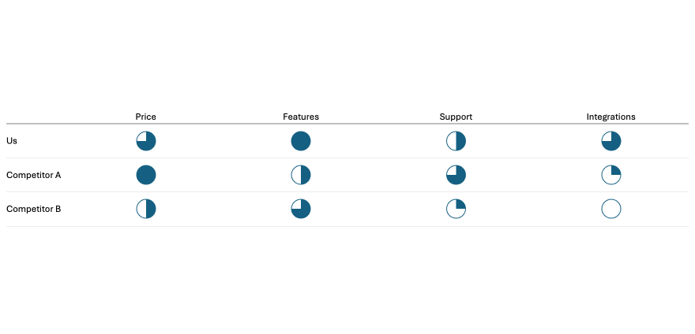
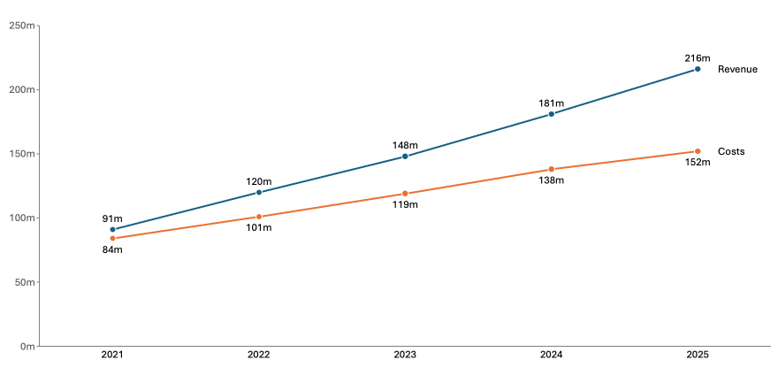
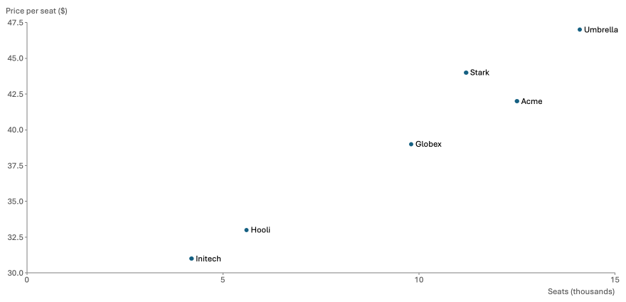

Consulting-style charts in PowerPoint. Open source.
open-charts adds waterfall, Mekko, Gantt, Harvey ball and 15 more chart types to PowerPoint. Charts are drawn as ordinary PowerPoint shapes, so they look right in any deck, and their data travels inside the file, so anyone with the add-in can edit them.
Drawn by PowerPoint, laid out by open-charts
Every picture below is a screenshot of a chart inserted with the add-in, at its default settings.








All types: stacked, clustered and 100% columns and bars, waterfall (build-up and build-down), combination, line, step line, stacked and 100% area, Mekko, Mekko with an x axis, scatter, bubble, pie, doughnut, Gantt, Harvey balls and tables.
How it works
Insert, then Edit data
Pick a type on the open-charts tab. Edit data opens a small grid; the chart on the slide follows as you type.
Your deck's look
Charts use the deck's theme colours and fonts, any font you have installed. Change a colour or font with PowerPoint's own tools and it stays when you update the chart.
Resize freely
Drag a chart to any size. Labels are measured and placed again, so text never stretches or overlaps.
Data inside the file
Send the deck to a colleague with the add-in and they can edit the chart. Without it, they still see a normal chart.
Install
Mac
Download the .pkg from the releases page and open it. No admin rights needed. Then look for the open-charts tab in PowerPoint.
Windows
Download the .msi from the releases page. It installs for your user only, without admin rights.
For IT teams
Silent installs, Intune and Jamf, macro policy and network use are covered in the IT deployment guide.